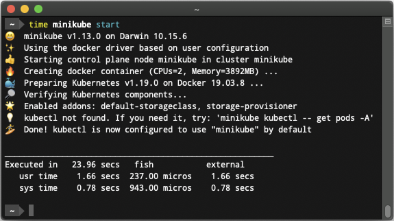

Minikube：本地部署K8S集群的好帮手！
Minikube 是一个轻量级的工具，它能够在本地计算机上启动并运行一个单节点的 K8S 集群，非常适合用于开发、测试以及学习 K8S 的基本概念和操作。

1. 主要特点
了解 Minikube 工具的特点和适用场景。
单节点集群：Minikube 在本地模拟一个完整的 K8S 环境，虽然只有一个节点，但包含了 K8S 的大部分核心组件，如 kube-apiserver、kube-scheduler、kube-controller-manager 和 etcd。
易于安装与使用：安装过程简单，通过官网提供的安装包或各大包管理工具均可快速安装。启动集群只需运行命令 minikube start，集群启动后便可使用 kubectl 进行管理。常被用作 CI/CD 流程中的测试平台，以及开发人员在代码更改后验证应用程序在 K8S 上的部署和运行情况。
多种虚拟化支持：Minikube 支持多种虚拟化驱动，例如 VirtualBox、Hyper-V、Docker 以及 KVM 等，用户可以根据自己的操作系统和偏好选择合适的驱动。
内置 Kubernetes Dashboard 服务：Minikube 提供了集成的 K8S Dashboard，允许用户通过图形界面直观地查看和管理集群资源，非常适合新手快速上手。
2. 工具安装
了解该工具的机器配置和安装方式。
服务器配置：使用 Minikube 工具的话，至少需要如下的硬件条件。
CPU 2+
MEM 2GB
DISK 20GB
安装方式：这里以 Linux 机器为主进行演示说明，具体可以参考 官方文档。
# Ubuntu22.04
$ curl -LO https://github.com/x/minikube-linux-amd64
$ sudo install minikube-linux-amd64 /usr/local/bin/minikube
命令补全：Minikube 自带了对应的命令补全方式。
# zsh
$ cat ~/.zshrc
source <(minikube completion zsh)
# alias
$ cat ~/.zshrc
alias kubectl="minikube kubectl --"
3. 命令使用
了解 Minikube 工具的命令使用方式。
Minikube 的命令体系设计得较为直观，核心命令围绕集群的启动、停止、状态查看和调试等操作展开，同时还提供了丰富的扩展功能，如插件管理、目录挂载、服务访问以及容器环境配置等。初次使用时，可以通过执行 minikube help 命令来查看所有支持的命令及其详细用法。
- 基础命令：
Basic Commands
# 启动本地K8S集群(可指定不同驱动和参数)
$ minikube start
$ minikube start -p k8s # 指定名称(minikube)
$ minikube start --driver=docker # 不同的驱动
$ minikube start --kubernetes-version=latest # 指定版本
$ minikube start --listen-address=0.0.0.0 # 指定访问地址
$ minikube start --cpus=max --memory=max # 指定CPU和内存
$ minikube start --image-mirror-country='cn' # 指定中国代理
# 查看本地K8S集群(显示组件状态)
$ minikube status
# 停止本地K8S集群(释放资源)
$ minikube stop
# 删除本地K8S集群
$ minikube delete
$ minikube delete --all
# 暂停本地K8S集群
$ minikube pause
# 恢复本地K8S集群
$ minikube unpause
# 启动本地K8S集群的dashboard界面
$ minikube dashboard
$ minikube dashboard --url
- 镜像命令：
Images Commands
# Docker环境配置
# 输出配置环境变量让你的DockerCLI与Minikube内置的Docker引擎通信
$ minikube docker-env
# Podman环境配置
# 输出配置环境变量让你的PodmanCLI与Minikube内置的Docker引擎通信
$ minikube podman-env
# 镜像缓存管理
# 用于添加或删除本地镜像缓存(能加快镜像拉取速度)
$ minikube cache add my-image:latest
# 用于管理容器镜像(不必推送到远程仓库)
$ minikube image load my-app:latest
- 配置管理命令：
Configuration and Management Commands
# 管理插件
# Minikube支持通过插件来扩展功能(Ingress)
$ minikube addons
$ minikube addons list # 列出
$ minikube addons enable ingress # 启用
$ minikube addons disable ingress # 禁用
# 设置或查看Minikube的全局配置选项
$ minikube config view # 查看当前所有的配置项
$ minikube config set cpus 4 # 设置默认使用4个CPU
# 管理多个集群配置
# 同时管理多个不同配置的 Minikube 集群
$ minikube profile list # 列出
$ minikube profile mycluster # 切换
# 更新本地kubeconfig文件
# 将当前的kubectl上下文指向Minikube集群
$ minikube update-context
- 网络命令：
Networking and Connectivity Commands
# 服务访问(快速在浏览器中访问集群中已暴露的服务)
$ minikube service my-service --url
# 将Minikube内部的LoadBalancer服务暴露到本机网络上
$ minikube tunnel
- 高级命令：
Advanced Commands
# 通过SSH登录到Minikube虚拟机
$ minikube ssh
# 挂载目录(将本地目录挂载到Minikube集群内)
$ minikube mount /path/to/local/dir:/mount-dir
# 使用内置的kubectl命令
$ minikube kubectl -- get pods
# 用于管理Minikube集群中的节点
$ minikube node list
# 在主机和Minikube虚拟机之间复制文件
$ minikube cp ./file.txt /tmp/remote-file.txt
- 调试命令：
Troubleshooting Commands
# 查看本地K8S集群日志
$ minikube logs
# 获取当前集群的IP地址
$ minikube ip
# 显示SSH登录到Minikube虚拟机的SSH密钥
$ minikube ssh-key
# 输出SSH连接到Minikube虚拟机的主机地址
$ minikube ssh-host
# 显示Minikube所支持的全局选项和命令行参数
$ minikube options
- 其他命令：
Other Commands
# 命令补全
$ minikube completion zsh/bash/powershell/fish
# 显示本地K8S集群证书到当前目录
$ minikube license
# 打印Minikube版本
$ minikube version
# 获取更新版本
$ minikube update-check
4. 启动服务
终于可以使用 Minikube 部署 K8S 集群了。
- 启动服务进行交互
启动 Minikube 集群服务，如果没有指定名称(-p)的话，默认的名称就是 minikube。
# 启动服务
$ minikube start \
--driver=docker \
--listen-address=0.0.0.0 \
--kubernetes-version=latest \
--memory=max --cpus=max
# 获取服务信息
$ minikube kubectl -- get pods -A
可以指定 --listen-address 参数将 Minikube 内部的服务暴露在 Minikube 外部。但是需要注意的是，由于 Minikube(特别是使用 Docker 驱动时)内部运行在一个独立的网络环境里，其 API Server 可能只绑定在虚拟 IP(192.168.49.2)上，外部无法直接访问。
解决方案之一，是利用 iptables 端口转发。将 A 机器在 192.168.31 网段的外部 IP 上的某个端口(8443)转发到 Minikube 内部的 IP 与端口。
# 在Nat链上面添加端口转发
$ sudo iptables -t nat -A PREROUTING \
-p tcp -d 192.168.31.100 --dport 8443 \
-j DNAT --to-destination 192.168.49.2:8443
# 动态Nat改写源地址
$ sudo iptables -t nat -A POSTROUTING -j MASQUERADE
另一种方法是配置一个反向代理工具(Nginx等)，在 A 机器上监听 192.168.31 网段的某个端口，然后将请求代理到 Minikube 内部的 IP 与端口。这样同网段的其他机器就可以访问，对应服务了。
server {
listen 8443;
server_name 192.168.31.100;
location / {
proxy_pass https://192.168.49.2:8443;
proxy_ssl_verify off; # 如果使用的是自签名证书
}
}
5. 暴露服务
集群内部的服务如何提供给其他人外部使用呢？
如果你的需求仅仅是让其他人访问集群内部署的某个应用服务，而不是将整个 Kubernetes API Server 暴露出去的话，可以考虑使用以下方法。
- 暴露服务：进行服务部署(
minikube service)
通过 Minikube 的 Service 暴露应用，对外提供服务。如果只是临时调试，可以使用该命令自动在浏览器中打开服务的访问地址，不过这通常只适用于本机访问。
# 部署服务并暴露端口
$ kubectl create deployment hello-minikube \
--image=kicbase/echo-server:1.0
$ kubectl expose deployment hello-minikube \
--type=NodePort --port=8080
# 获取状态
$ kubectl get services hello-minikube
# 通过以下命令获取服务的访问地址
$ minikube service hello-minikube --url
http://192.168.100.100:31613
# 或者端口转发到本地(http://localhost:7080)
$ kubectl port-forward service/hello-minikube 7080:8080
- 暴露服务：进行服务部署(
minikube tunnel)
对于类型为 LoadBalancer 的服务，该命令可通过隧道分配外部 IP 地址，从而使外部机器能访问。需要注意的是，此命令会在 A 机器上持续运行，并需要管理员权限。
# 部署服务并暴露端口
$ kubectl create deployment
$ kubectl create deployment balanced \
--image=kicbase/echo-server:1.0
$ kubectl expose deployment balanced \
--type=LoadBalancer --port=8080
# 获取状态
$ kubectl get services balanced
# 浏览器直接访问(<EXTERNAL-IP>:8080)
$ minikube tunnel
- 暴露服务：进行服务部署 - Ingress
使用 Ingress 也可以暴露内部服务到外边，通过 ip 和域名的映射就可以访问。
# 开启扩展
$ minikube addons enable ingress
# 部署服务
$ kubectl apply -f https://t.com/ingress-example.yaml
$ kubectl get ingress
6. 参考文档
送人玫瑰，手有余香。